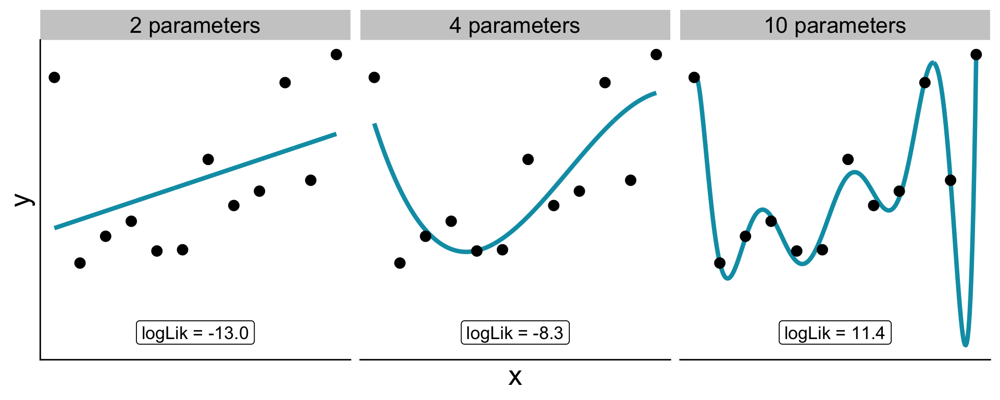
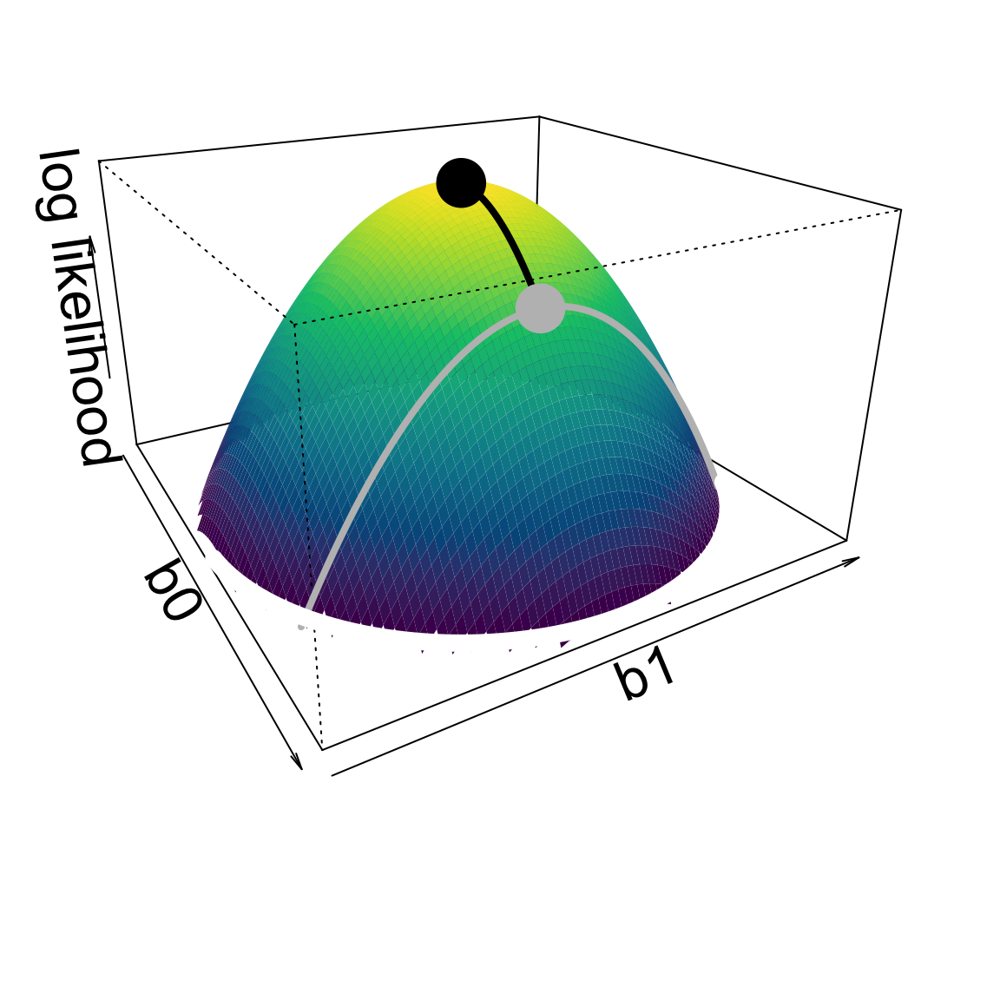
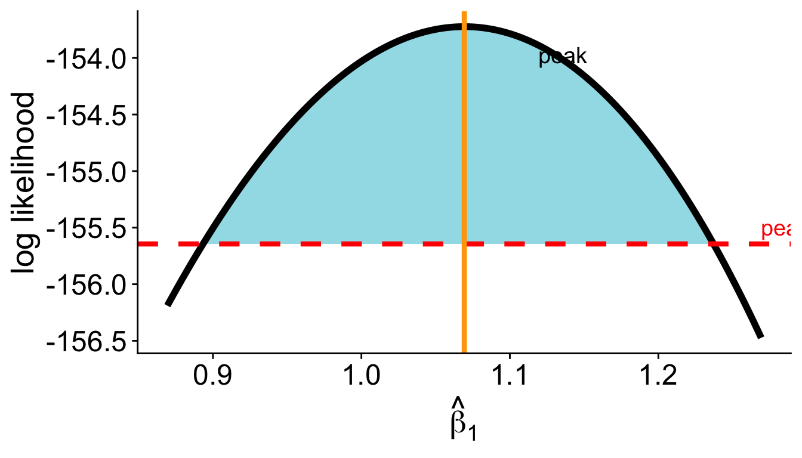

Likelihood Ratio Tests and Confidence Intervals
Is overdispersion supported by my data?
We saw that the Poisson GLM assumes variance = mean = \(\lambda\)
A negative binomial GLM relaxes that: variance \(= \lambda + \lambda^2 / k\), where \(k\) is an extra dispersion parameter
Both models fit. But is the negative binomial actually better?
Is overdispersion supported by my data?
We can compare log likelihoods
The negative binomial has a higher log likelihood, but is that difference significant?
What to consider for significance
- Quantify the difference between models
- Compare that quantity to what we would expect if there were no real difference, i.e. the null
What is the null?
If the two models were truly equivalent (no overdispersion, \(k \rightarrow \infty\)), what would the difference in log likelihoods look like?
- Adding a parameter always increases log likelihood a little, even when fitting noise
- If the null is true, the gain is just random luck
We need a null distribution for accidental log likelihood gains
What is the null?
Need to consider: more parameters let the model bend to match idiosyncrasies of the data, even pure noise (the case here)

What is the null?
How do more parameters increase likelihood?
Access to higher parameter dimensions.

Log likelihoods are approximately quadratic
Thus vertical distances are squared
What is the null?
If vertical distances are squared
\(2(\log\mathscr{L}(\text{data} \mid b_0,~b_1) - \log\mathscr{L}(\text{data} \mid b_0)) \sim \chi^2\)

differences in log likelihoods between models (times 2) will be \(\chi^2\)-distributed
the times 2 is a scaling factor from deep in the math
The likelihood ratio test
This \(\chi^2\) distribution provides our null, and gives us a significance test!
\[ \Lambda = 2\!\left(\log\mathscr{L}_\text{full} - \log\mathscr{L}_\text{null}\right) \;\sim\; \chi^2_{df} \]
- \(df\) = difference in number of parameters between models
- If the added parameters are truly meaningful, \(\Lambda\) should be large and we should reject the null
LRT applied to overdispersion
LRT applied to overdispersion
We can also use the built-in anova function:
LRT: key assumption
Nested models
The LRT requires the null model to be a special case of the full model
- Poisson is nested in negative binomial (\(k \to \infty\) recovers Poisson)
glm(y ~ x)is nested inglm(y ~ x + z)- Not nested: Poisson vs. normal; two models with non-overlapping predictors
LRT for a predictor: does human impact matter?
After accounting for area, does human impact (hii) improve the fit?
LRT for a predictor: does human impact matter?
Likelihood ratio tests of Negative Binomial Models
Response: nspp
Model theta Resid. df 2 x log-lik. Test df
1 log(Plot_Area) 9.014755 526 -2325.269
2 log(Plot_Area) + hii 10.079784 525 -2306.374 1 vs 2 1
LR stat. Pr(Chi)
1
2 18.89501 1.381132e-05anova with test = "Chisq" does the LRT for us when comparing nested glm objects
One extra parameter (hii), so \(df = 1\)
LRT for a predictor: interpreting the result
Despite the slope for hii being small (and positive), \(P\)-value is less than 0.05
Confidence intervals as another way to evaluate significance
A coefficient is judged significant if its confidence interval does not include zero
Two ways to build CIs from likelihood:
- Likelihood ratio interval — invert the LRT
- Wald interval — use the CLT approximation directly
LRT confidence interval
Find all values of \(\theta\) such that the LRT would not reject the null \(H_0: \theta = \theta_0\)
\[ 2\!\left(\log\mathscr{L}(\hat\theta) - \log\mathscr{L}(\theta_0)\right) \leq 3.84 \]
Rearranging:
\[ \log\mathscr{L}(\theta_0) \geq \log\mathscr{L}(\hat\theta) - 1.92 \]
LRT confidence interval

LRT confidence interval
In R, confint on a glm uses this profile likelihood approach by default:
Wald confidence intervals
Another approach: use the CLT approximation directly
According to CLT \(\hat\theta\) is approximately normally distributed:
\[ \hat\theta \pm z_{0.975} \cdot \widehat{\text{SE}}(\hat\theta) \]
LRT vs. Wald intervals
LRT (profile likelihood)
- more accurate, especially for small \(n\)
- CI can be asymmetric — follows the actual shape of the likelihood surface
Wald
- fast and simple
- symmetric by construction
- less accurate when log likelihood surface is asymmetric
Summary
- The LRT compares nested models: \(\Lambda = 2(\log\mathscr{L}_\text{full} - \log\mathscr{L}_\text{null}) \sim \chi^2_{df}\)
- The \(\chi^2\) null distribution arises from the CLT applied to MLE — the log likelihood surface is approximately quadratic
- Nested models are required: null must be a special case of full
anova(mod1, mod2, test = "Chisq")does the work in R
Summary
- LRT confidence intervals invert the LRT: all \(\theta\) within 1.92 log likelihood units of the peak form the 95% CI
- Wald intervals use the normal approximation directly